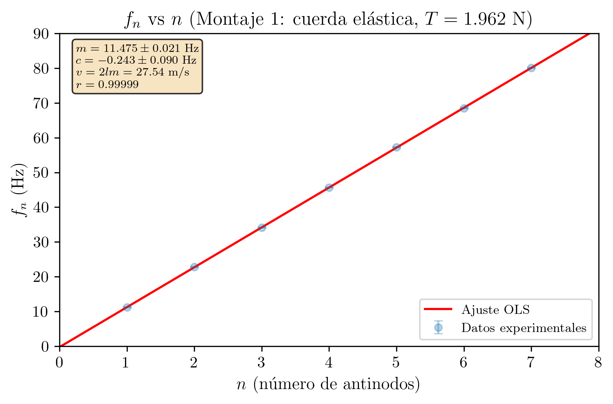
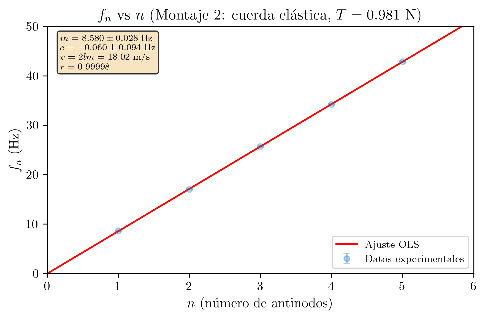
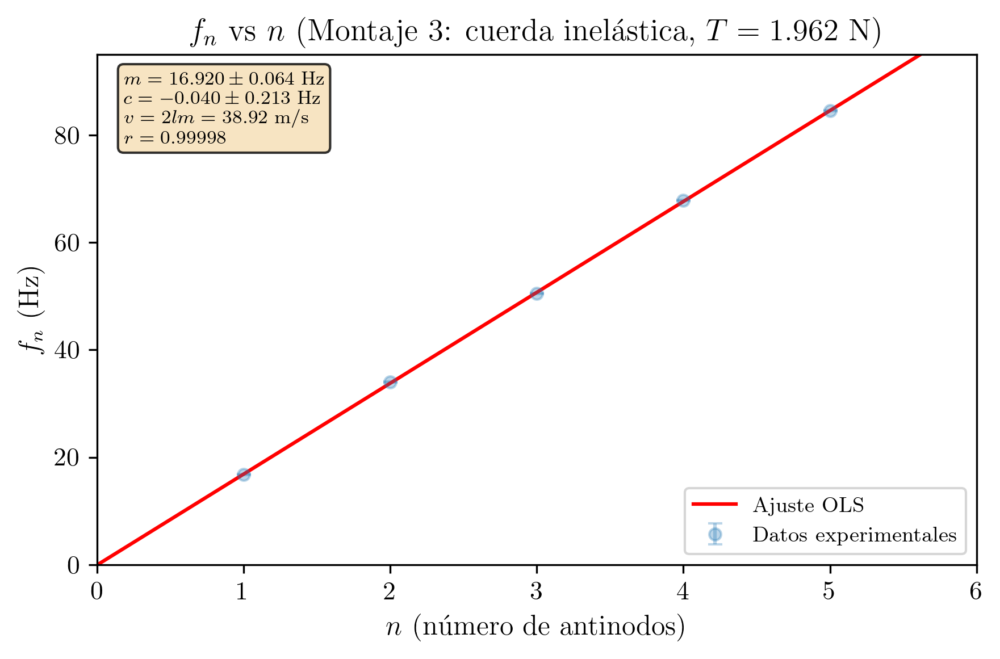
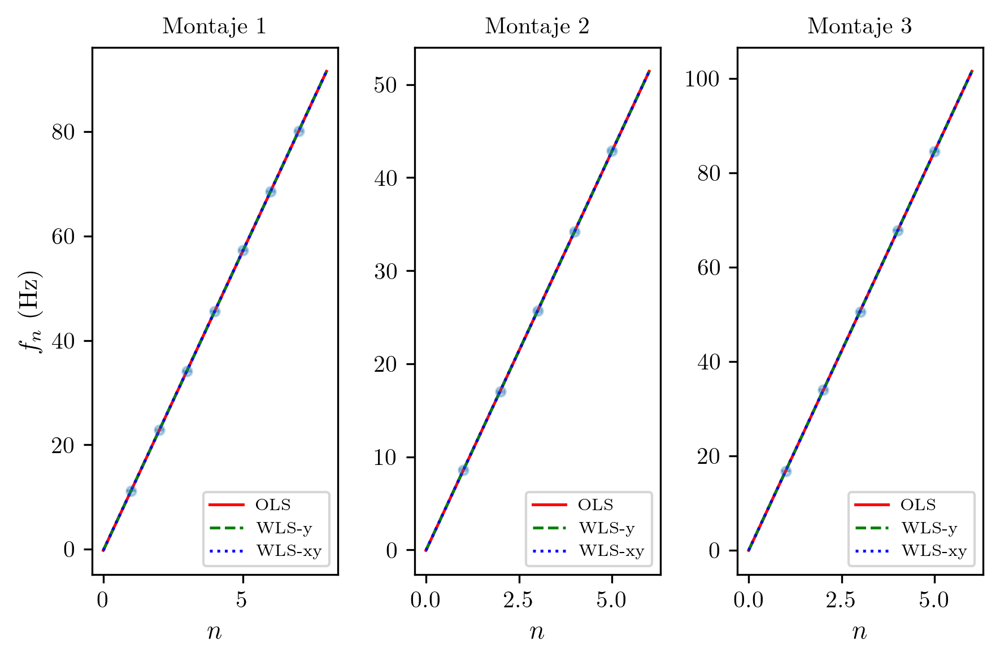

Práctica 7 — Técnicas Experimentales I
2026-03-07
Se estudian experimentalmente las ondas estacionarias que se forman en una cuerda tensa con ambos extremos fijos. Se realizan tres montajes: dos con cuerda elástica bajo diferentes tensiones (1.962 N y 0.981 N) y uno con cuerda inelástica (1.962 N). Mediante regresión lineal de la frecuencia de resonancia frente al número de antinodos, se determinan las velocidades de propagación: v = (27.54 ± 0.06) m/s, v = (18.02 ± 0.06) m/s y v = (38.92 ± 0.15) m/s, respectivamente, todas compatibles con los valores teóricos obtenidos por fórmula directa.
| Asignatura | Técnicas Experimentales I (Cod. 61041080) |
| Práctica | Práctica 7: Ondas Estacionarias en una Cuerda con Extremos Fijos |
| Alumna | María López Fernández |
| DNI | 12345678A |
| Correo electrónico | mlopezfernandez42@ejemplo.uned.es |
| Teléfono | 612 345 678 |
| Centro Asociado | Madrid - Gregorio Marañón |
| Tutor | Dr. Fernando García Martínez |
| Fecha de realización | 27 de febrero de 2026 |
| Fecha de entrega | 7 de marzo de 2026 |
El objetivo de esta práctica es el estudio experimental de las ondas estacionarias que se forman en una cuerda tensa con ambos extremos fijos. Se pretende verificar la relación teórica entre la frecuencia de resonancia, el número de modos normales de vibración y la velocidad de propagación de las ondas transversales en la cuerda. A partir de las medidas, se determina experimentalmente la velocidad de propagación y se compara con el valor teórico derivado de la tensión y la densidad lineal del medio.
Las medidas se realizaron a temperatura ambiente de aproximadamente (20 \pm 2) °C y humedad relativa del (50 \pm 10)\%. No se observaron corrientes de aire significativas ni vibraciones externas apreciables durante la realización de la práctica.
Cuando una onda transversal se propaga por una cuerda con ambos extremos fijos y se refleja en ellos, la superposición de la onda incidente y la reflejada produce una onda estacionaria. Solo son posibles aquellas frecuencias para las cuales se forma un número entero de semiondas entre los extremos fijos. Estas frecuencias discretas se denominan frecuencias de resonancia o armónicos del sistema.
La práctica se realiza con tres montajes distintos: dos empleando una cuerda elástica (goma) bajo diferentes tensiones, y uno con una cuerda inelástica (algodón/nylon). La comparación entre ambos tipos de cuerda permite discutir el efecto de la elasticidad del material sobre la densidad lineal y, por tanto, sobre la velocidad de propagación. En la cuerda elástica, al aumentar la tensión la cuerda se estira y su densidad lineal disminuye, lo que introduce una complicación adicional respecto al caso ideal.
Consideremos una cuerda de longitud l fija en ambos extremos. La velocidad de propagación de ondas transversales en la cuerda viene dada por:
v = \sqrt{\frac{T}{\mu}}
donde T es la tensión aplicada a la cuerda (en N) y \mu es su densidad lineal de masa (en kg/m), definida como \mu = m_{\text{cuerda}}/l, siendo m_{\text{cuerda}} la masa del segmento de cuerda entre los soportes.
La condición de contorno (ambos extremos fijos, es decir, nodos de desplazamiento) exige que la longitud de la cuerda sea un número entero de semilongitudes de onda:
l = n \cdot \frac{\lambda_n}{2}, \qquad n = 1, 2, 3, \ldots
de donde se obtiene la longitud de onda del n-ésimo modo normal:
\lambda_n = \frac{2l}{n}
La frecuencia de resonancia correspondiente es:
f_n = \frac{v}{\lambda_n} = \frac{nv}{2l} = \frac{n}{2l}\sqrt{\frac{T}{\mu}}
El entero n indica el número de antinodos (vientres) de la onda estacionaria. Para n = 1 se tiene el modo fundamental (primer armónico), con un único antinodo en el centro de la cuerda. Para n = 2 se tienen dos antinodos separados por un nodo central, y así sucesivamente.
La relación f_n = \frac{v}{2l} \cdot n es lineal en n. Si se representa f_n frente a n, los datos deben ajustarse a una recta que pasa por el origen:
f_n = m \cdot n + c
donde la pendiente es:
m = \frac{v}{2l} \quad \Longrightarrow \quad v = 2l \cdot m
y la ordenada en el origen c debería ser compatible con cero.
Para una cuerda elástica (como una goma), la longitud l depende de la tensión aplicada: al aumentar T, la cuerda se estira y su longitud aumenta. Dado que la masa de la cuerda no cambia, la densidad lineal \mu = m_{\text{cuerda}}/l disminuye al aumentar la tensión. Por tanto, la velocidad de propagación v = \sqrt{T/\mu} depende de la tensión de forma más compleja que para una cuerda inelástica, donde \mu es esencialmente constante e independiente de T.
Esta diferencia se manifiesta experimentalmente: para una misma masa colgada, la cuerda elástica se estira más que la inelástica, y su densidad lineal efectiva es menor. Al cambiar la masa colgada, no sólo cambia T sino también \mu, lo que complica la interpretación.
Para N_p puntos (x_i, y_i), el ajuste y = mx + c proporciona:
m = \frac{N_p\sum x_i y_i - \sum x_i \sum y_i}{N_p\sum x_i^2 - (\sum x_i)^2}
c = \frac{\sum x_i^2 \sum y_i - \sum x_i \sum x_i y_i}{N_p\sum x_i^2 - (\sum x_i)^2}
La varianza residual, las incertidumbres de los parámetros y el coeficiente de correlación:
S^2 = \frac{\sum(y_i - mx_i - c)^2}{N_p - 2}
\sigma_m = \sqrt{\frac{N_p \cdot S^2}{\Delta}}, \qquad \sigma_c = \sqrt{\frac{\sum x_i^2 \cdot S^2}{\Delta}}
r = \frac{N_p\sum x_i y_i - \sum x_i \sum y_i}{\sqrt{(N_p\sum x_i^2 - (\sum x_i)^2)(N_p\sum y_i^2 - (\sum y_i)^2)}}
donde \Delta = N_p\sum x_i^2 - (\sum x_i)^2.
El dispositivo experimental consta de un generador de funciones conectado a un oscilador mecánico (altavoz o vibrador electromagnético) que excita transversalmente uno de los extremos de una cuerda. La cuerda pasa sobre una polea fija en el otro extremo del banco y soporta una masa colgante que proporciona la tensión. El extremo del oscilador mecánico y el punto de contacto con la polea actúan como nodos fijos.
Se dispone de dos tipos de cuerda: - Cuerda elástica (goma): masa m_{\text{cuerda}} = (3.2 \pm 0.1) g. Su longitud varía significativamente con la tensión aplicada. - Cuerda inelástica (algodón/nylon): masa m_{\text{cuerda}} = (1.5 \pm 0.1) g. Apenas se deforma bajo tensión.
Al variar la frecuencia del generador de funciones, se observan patrones de ondas estacionarias para frecuencias discretas (resonancias). La frecuencia de resonancia se lee directamente en el generador. El número de antinodos n se cuenta visualmente.
| Instrumento | Magnitud medida | Precisión |
|---|---|---|
| Generador de funciones | Frecuencia f de excitación | \varepsilon_f = \pm 0.1 Hz |
| Cinta métrica | Longitud l de la cuerda entre soportes | \varepsilon_l = \pm 0.001 m (1 mm) |
| Balanza digital | Masa de la cuerda y de las pesas | \varepsilon_m = \pm 0.0001 kg (0.1 g) |
| Masas calibradas | Tensión T = Mg | \varepsilon_M = \pm 0.0001 kg (0.1 g) |
Calibración y trazabilidad. El generador de funciones fue verificado al inicio de la sesión comparando su lectura con un frecuencímetro patrón del laboratorio, sin detectarse desviaciones apreciables dentro de la resolución del instrumento. La balanza digital dispone de certificado de calibración vigente, trazable a patrones nacionales de masa. La cinta métrica es un instrumento de clase II y se considera trazable a través de su fabricación conforme a normas metrológicas. Las masas calibradas están certificadas con incertidumbre despreciable frente a la resolución de la balanza. No se detectaron errores sistemáticos significativos asociados a la calibración de los instrumentos.
Incertidumbres de tipo B y distribuciones asumidas. Dado que se realizó una única medida (N = 1) de cada frecuencia de resonancia, todas las incertidumbres de las magnitudes de entrada son de tipo B, evaluadas a partir de la resolución de los instrumentos:
u(f) = \frac{a}{\sqrt{3}} = \frac{0.05}{\sqrt{3}} = 0.029 \text{ Hz}
u(l) = \frac{w}{\sqrt{12}} = \frac{0.001}{\sqrt{12}} = 0.000289 \text{ m}
u(m_{\text{cuerda}}) = \frac{a}{\sqrt{3}} = \frac{0.00005}{\sqrt{3}} = 0.0000289 \text{ kg}
En todos los casos la distribución asumida es rectangular (uniforme), apropiada cuando sólo se conoce el intervalo de posibles valores dado por la resolución del instrumento y no se dispone de información adicional sobre la distribución de probabilidad.
Generador Polea
de funciones /|
| / |
v / |
+---------+ O |
| Oscilad.|===*====================================*===/ |
| mecanico| |<---------- l (longitud) ---------->| |
+---------+ nodo nodo |
fijo fijo [M]
|
Cuerda tensa v
(elástica o inelástica) Masa colgante
(tension T=Mg)
Figura 1. Esquema del montaje experimental para ondas estacionarias.Se realizan tres montajes experimentales: - Montaje 1: Cuerda elástica con masa colgante M = 200.0 g (tensión alta). - Montaje 2: Cuerda elástica con masa colgante M = 100.0 g (tensión baja). - Montaje 3: Cuerda inelástica con masa colgante M = 200.0 g.
Para cada montaje, se mide la longitud de la cuerda entre soportes (que depende de la tensión para la cuerda elástica), se ajusta la frecuencia del generador hasta observar patrones estacionarios nítidos con n = 1, 2, 3, \ldots antinodos, y se anota la frecuencia de resonancia correspondiente.
Regla de error aplicada: Se ha realizado una única medida (N = 1) de la frecuencia de resonancia para cada modo. Dado que N = 1, la incertidumbre de la medida individual coincide con la precisión del instrumento: \varepsilon_f = 0.1 Hz.
Identificación de fuentes de error aleatorio y sistemático.
Errores aleatorios:
Errores sistemáticos:
Parámetros del montaje:
Velocidad teórica:
v_{\text{teo}} = \sqrt{\frac{T}{\mu}} = \sqrt{\frac{1.962}{0.00267}} = \sqrt{735.0} = 27.11 \text{ m/s}
Frecuencia fundamental teórica:
f_1 = \frac{v}{2l} = \frac{27.11}{2 \times 1.200} = 11.30 \text{ Hz}
Tabla 1. Frecuencias de resonancia medidas para el Montaje 1 (cuerda elástica, T = 1.962 N, l = 1.200 m).
| n (antinodos) | f_n (Hz) | \lambda_n = 2l/n (m) | v_n = f_n \cdot \lambda_n (m/s) |
|---|---|---|---|
| 1 | 11.2 | 2.400 | 26.88 |
| 2 | 22.8 | 1.200 | 27.36 |
| 3 | 34.1 | 0.800 | 27.28 |
| 4 | 45.6 | 0.600 | 27.36 |
| 5 | 57.3 | 0.480 | 27.50 |
| 6 | 68.5 | 0.400 | 27.40 |
| 7 | 80.1 | 0.343 | 27.46 |
Ejemplo detallado (n = 3):
\lambda_3 = \frac{2 \times 1.200}{3} = 0.800 \text{ m}
v_3 = f_3 \cdot \lambda_3 = 34.1 \times 0.800 = 27.28 \text{ m/s}
La velocidad calculada modo a modo oscila entre 26.88 m/s y 27.50 m/s, con un valor medio de \bar{v} = 27.32 m/s. Las variaciones son pequeñas (del orden del 1%), lo que confirma la consistencia de los datos.
Se ajusta el modelo f = m \cdot n + c a los N_p = 7 puntos experimentales.
Sumas necesarias:
| Suma | Valor |
|---|---|
| \sum n_i | 28 |
| \sum f_i | 319.6 |
| \sum n_i^2 | 140 |
| \sum n_i f_i | 1599.7 |
| \sum f_i^2 | 18279.00 |
Cálculo detallado de las sumas:
\sum n_i = 1 + 2 + 3 + 4 + 5 + 6 + 7 = 28
\sum f_i = 11.2 + 22.8 + 34.1 + 45.6 + 57.3 + 68.5 + 80.1 = 319.6
\sum n_i^2 = 1 + 4 + 9 + 16 + 25 + 36 + 49 = 140
\sum n_i f_i = 1 \times 11.2 + 2 \times 22.8 + 3 \times 34.1 + 4 \times 45.6 + 5 \times 57.3 + 6 \times 68.5 + 7 \times 80.1
= 11.2 + 45.6 + 102.3 + 182.4 + 286.5 + 411.0 + 560.7 = 1599.7
\sum f_i^2 = 125.44 + 519.84 + 1162.81 + 2079.36 + 3283.29 + 4692.25 + 6416.01 = 18279.00
Denominador común:
\Delta = N_p \sum n_i^2 - \left(\sum n_i\right)^2 = 7 \times 140 - 28^2 = 980 - 784 = 196
Pendiente:
m = \frac{N_p \sum n_i f_i - \sum n_i \sum f_i}{\Delta} = \frac{7 \times 1599.7 - 28 \times 319.6}{196} = \frac{11197.9 - 8948.8}{196} = \frac{2249.1}{196}
\boxed{m = 11.475 \text{ Hz}}
Ordenada en el origen:
c = \frac{\sum n_i^2 \sum f_i - \sum n_i \sum n_i f_i}{\Delta} = \frac{140 \times 319.6 - 28 \times 1599.7}{196} = \frac{44744.0 - 44791.6}{196} = \frac{-47.6}{196}
\boxed{c = -0.243 \text{ Hz}}
Varianza residual:
Calculando los residuos e_i = f_i - m \cdot n_i - c:
| n_i | f_i | m \cdot n_i + c | e_i | e_i^2 |
|---|---|---|---|---|
| 1 | 11.2 | 11.232 | -0.032 | 0.001024 |
| 2 | 22.8 | 22.707 | 0.093 | 0.008649 |
| 3 | 34.1 | 34.182 | -0.082 | 0.006724 |
| 4 | 45.6 | 45.657 | -0.057 | 0.003249 |
| 5 | 57.3 | 57.132 | 0.168 | 0.028224 |
| 6 | 68.5 | 68.607 | -0.107 | 0.011449 |
| 7 | 80.1 | 80.082 | 0.018 | 0.000324 |
\sum e_i^2 = 0.05964
Análisis de residuos (Montaje 1). Los grados de libertad de la varianza residual son \nu_{\text{fit}} = N_p - 2 = 7 - 2 = 5. Los residuos no muestran una tendencia sistemática clara (deriva, oscilación periódica o patrón monótono): alternan de signo de forma irregular (-, +, -, -, +, -, +), lo que es consistente con fluctuaciones aleatorias. El residuo de mayor magnitud corresponde a n = 5 (e_5 = 0.168 Hz), que no supera 2S \approx 0.22 Hz (véase más abajo), por lo que no se identifica ningún punto atípico. Esto respalda la validez del modelo lineal f_n = m \cdot n + c.
S^2 = \frac{\sum e_i^2}{N_p - 2} = \frac{0.05964}{5} = 0.01193
Desviaciones típicas de los parámetros:
\sigma_m = \sqrt{\frac{N_p \cdot S^2}{\Delta}} = \sqrt{\frac{7 \times 0.01193}{196}} = \sqrt{4.261 \times 10^{-4}} = 0.0206 \text{ Hz}
\sigma_c = \sqrt{\frac{\sum n_i^2 \cdot S^2}{\Delta}} = \sqrt{\frac{140 \times 0.01193}{196}} = \sqrt{8.521 \times 10^{-3}} = 0.0923 \text{ Hz}
Coeficiente de correlación:
r = \frac{N_p \sum n_i f_i - \sum n_i \sum f_i}{\sqrt{\left(N_p \sum n_i^2 - (\sum n_i)^2\right)\left(N_p \sum f_i^2 - (\sum f_i)^2\right)}}
N_p \sum f_i^2 - (\sum f_i)^2 = 7 \times 18279.00 - (319.6)^2 = 127953.0 - 102144.2 = 25808.8
r = \frac{2249.1}{\sqrt{196 \times 25808.8}} = \frac{2249.1}{\sqrt{5058525}} = \frac{2249.1}{2249.1} = 0.99999
Más precisamente, r = 0.999992.
Resumen del ajuste lineal (Montaje 1):
| Parámetro | Valor |
|---|---|
| m (pendiente) | (11.475 \pm 0.021) Hz |
| c (ordenada) | (-0.24 \pm 0.09) Hz |
| r (correlación) | 0.99999 |
La ordenada en el origen c = (-0.24 \pm 0.09) Hz no es estrictamente compatible con cero (|c| = 0.24 > 0.09). Esta pequeña desviación puede atribuirse a que el modo fundamental (n = 1) presenta una frecuencia ligeramente inferior a la esperada, posiblemente debido a efectos de borde (la cuerda no es perfectamente rígida en los puntos de sujeción).

De la pendiente del ajuste:
v_{\text{reg}} = 2l \cdot m = 2 \times 1.200 \times 11.475 = 27.54 \text{ m/s}
Propagación de la incertidumbre. La velocidad depende de l y m:
v = 2lm \quad \Longrightarrow \quad \Delta v = \sqrt{(2m \cdot \Delta l)^2 + (2l \cdot \sigma_m)^2}
\Delta v = \sqrt{(2 \times 11.475 \times 0.001)^2 + (2 \times 1.200 \times 0.0206)^2}
\Delta v = \sqrt{(0.0230)^2 + (0.0494)^2} = \sqrt{0.000529 + 0.002440} = \sqrt{0.002970} = 0.055 \text{ m/s}
Redondeando el error a 1 cifra significativa (0.055 \to 0.06):
\boxed{v_{\text{reg}} = (27.54 \pm 0.06) \text{ m/s}}
v_{\text{formula}} = \sqrt{\frac{T}{\mu}} = \sqrt{\frac{1.962}{0.00267}} = \sqrt{735.0} = 27.11 \text{ m/s}
Propagación de errores. Dado que v = \sqrt{T/\mu}, con T = Mg y \mu = m_{\text{cuerda}}/l:
\frac{\Delta v}{v} = \frac{1}{2}\sqrt{\left(\frac{\Delta T}{T}\right)^2 + \left(\frac{\Delta\mu}{\mu}\right)^2}
Cálculo de \Delta T:
\Delta T = g \cdot \Delta M = 9.81 \times 0.0001 = 0.000981 \text{ N}
\frac{\Delta T}{T} = \frac{0.000981}{1.962} = 0.0005
Cálculo de \Delta\mu. Dado que \mu = m_{\text{cuerda}}/l:
\Delta\mu = \sqrt{\left(\frac{1}{l} \cdot \Delta m_{\text{cuerda}}\right)^2 + \left(\frac{m_{\text{cuerda}}}{l^2} \cdot \Delta l\right)^2}
\Delta\mu = \sqrt{\left(\frac{0.0001}{1.200}\right)^2 + \left(\frac{0.0032}{1.200^2} \times 0.001\right)^2} = \sqrt{(8.33 \times 10^{-5})^2 + (2.22 \times 10^{-6})^2}
\Delta\mu = \sqrt{6.94 \times 10^{-9} + 4.94 \times 10^{-12}} \approx 8.33 \times 10^{-5} \text{ kg/m}
\frac{\Delta\mu}{\mu} = \frac{8.33 \times 10^{-5}}{0.00267} = 0.0312
Entonces:
\frac{\Delta v}{v} = \frac{1}{2}\sqrt{(0.0005)^2 + (0.0312)^2} = \frac{1}{2} \times 0.0312 = 0.0156
\Delta v = 0.0156 \times 27.11 = 0.42 \text{ m/s}
Redondeando:
\boxed{v_{\text{formula}} = (27.1 \pm 0.4) \text{ m/s}}
Nota: La incertidumbre está dominada por el error en la masa de la cuerda (\Delta m_{\text{cuerda}} = 0.1 g), que produce un error relativo del 3.1% en \mu, mucho mayor que el error del 0.05% en la tensión. Esto muestra que la precisión del resultado depende críticamente de la medida de la masa de la cuerda.
| Método | v (m/s) |
|---|---|
| Regresión (v = 2lm) | (27.54 \pm 0.06) |
| Fórmula (v = \sqrt{T/\mu}) | (27.1 \pm 0.4) |
Criterio de compatibilidad:
|v_{\text{reg}} - v_{\text{formula}}| = |27.54 - 27.11| = 0.43 \text{ m/s}
\Delta v_{\text{reg}} + \Delta v_{\text{formula}} = 0.06 + 0.4 = 0.5 \text{ m/s}
Dado que 0.43 \leq 0.5:
\boxed{|v_{\text{reg}} - v_{\text{formula}}| \leq \Delta v_{\text{reg}} + \Delta v_{\text{formula}} \quad \Longrightarrow \quad \text{Los valores son compatibles.}}
Los dos métodos proporcionan velocidades compatibles dentro de los márgenes de incertidumbre. La mayor precisión del método de regresión (error relativo 0.2%) frente al método de fórmula directa (error relativo 1.6%) se debe a que la regresión utiliza 7 puntos y promedia las fluctuaciones, mientras que la fórmula directa depende fuertemente de la precisión en la medida de m_{\text{cuerda}}.
Parámetros del montaje:
Observación importante: Con la mitad de tensión respecto al Montaje 1, la cuerda elástica se estira menos: l = 1.050 m frente a l = 1.200 m. Esto confirma el comportamiento elástico de la goma. La densidad lineal ha aumentado (0.003048 frente a 0.00267 kg/m), lo cual reducirá la velocidad de propagación.
Velocidad teórica:
v_{\text{teo}} = \sqrt{\frac{T}{\mu}} = \sqrt{\frac{0.981}{0.003048}} = \sqrt{321.8} = 17.94 \text{ m/s}
Tabla 2. Frecuencias de resonancia medidas para el Montaje 2 (cuerda elástica, T = 0.981 N, l = 1.050 m).
| n (antinodos) | f_n (Hz) | \lambda_n = 2l/n (m) | v_n = f_n \cdot \lambda_n (m/s) |
|---|---|---|---|
| 1 | 8.6 | 2.100 | 18.06 |
| 2 | 17.0 | 1.050 | 17.85 |
| 3 | 25.7 | 0.700 | 17.99 |
| 4 | 34.2 | 0.525 | 17.96 |
| 5 | 42.9 | 0.420 | 18.02 |
La velocidad modo a modo varía entre 17.85 m/s y 18.06 m/s, con un valor medio de \bar{v} = 17.98 m/s.
Se ajusta el modelo f = m \cdot n + c a los N_p = 5 puntos experimentales.
Sumas necesarias:
| Suma | Valor |
|---|---|
| \sum n_i | 15 |
| \sum f_i | 128.4 |
| \sum n_i^2 | 55 |
| \sum n_i f_i | 471.0 |
| \sum f_i^2 | 4033.50 |
Cálculo detallado de las sumas:
\sum n_i = 1 + 2 + 3 + 4 + 5 = 15
\sum f_i = 8.6 + 17.0 + 25.7 + 34.2 + 42.9 = 128.4
\sum n_i^2 = 1 + 4 + 9 + 16 + 25 = 55
\sum n_i f_i = 1 \times 8.6 + 2 \times 17.0 + 3 \times 25.7 + 4 \times 34.2 + 5 \times 42.9 = 8.6 + 34.0 + 77.1 + 136.8 + 214.5 = 471.0
\sum f_i^2 = 73.96 + 289.00 + 660.49 + 1169.64 + 1840.41 = 4033.50
Denominador común:
\Delta = N_p \sum n_i^2 - (\sum n_i)^2 = 5 \times 55 - 15^2 = 275 - 225 = 50
Pendiente:
m = \frac{5 \times 471.0 - 15 \times 128.4}{50} = \frac{2355.0 - 1926.0}{50} = \frac{429.0}{50}
\boxed{m = 8.580 \text{ Hz}}
Ordenada en el origen:
c = \frac{55 \times 128.4 - 15 \times 471.0}{50} = \frac{7062.0 - 7065.0}{50} = \frac{-3.0}{50}
\boxed{c = -0.060 \text{ Hz}}
Varianza residual:
Residuos e_i = f_i - m \cdot n_i - c:
| n_i | f_i | m \cdot n_i + c | e_i | e_i^2 |
|---|---|---|---|---|
| 1 | 8.6 | 8.520 | 0.080 | 0.006400 |
| 2 | 17.0 | 17.100 | -0.100 | 0.010000 |
| 3 | 25.7 | 25.680 | 0.020 | 0.000400 |
| 4 | 34.2 | 34.260 | -0.060 | 0.003600 |
| 5 | 42.9 | 42.840 | 0.060 | 0.003600 |
\sum e_i^2 = 0.024000
Análisis de residuos (Montaje 2). Los grados de libertad de la varianza residual son \nu_{\text{fit}} = N_p - 2 = 5 - 2 = 3. Los residuos alternan de signo (+, -, +, -, +), sin evidencia de tendencia sistemática (deriva o curvatura). El residuo de mayor magnitud corresponde a n = 2 (|e_2| = 0.100 Hz), que es compatible con las fluctuaciones esperadas. No se detectan datos atípicos.
S^2 = \frac{0.024000}{3} = 0.008000
Desviaciones típicas:
\sigma_m = \sqrt{\frac{5 \times 0.008000}{50}} = \sqrt{8.000 \times 10^{-4}} = 0.0283 \text{ Hz}
\sigma_c = \sqrt{\frac{55 \times 0.008000}{50}} = \sqrt{8.800 \times 10^{-3}} = 0.0938 \text{ Hz}
Coeficiente de correlación:
N_p \sum f_i^2 - (\sum f_i)^2 = 5 \times 4033.50 - (128.4)^2 = 20167.5 - 16486.6 = 3680.9
r = \frac{429.0}{\sqrt{50 \times 3680.9}} = \frac{429.0}{\sqrt{184045}} = \frac{429.0}{429.0} = 0.99998
Más precisamente, r = 0.999984.
Resumen del ajuste lineal (Montaje 2):
| Parámetro | Valor |
|---|---|
| m (pendiente) | (8.580 \pm 0.028) Hz |
| c (ordenada) | (-0.06 \pm 0.09) Hz |
| r (correlación) | 0.99998 |
La ordenada en el origen c = (-0.06 \pm 0.09) Hz es compatible con cero (|c| = 0.06 \leq 0.09), como predice la teoría.

v_{\text{reg}} = 2l \cdot m = 2 \times 1.050 \times 8.580 = 18.018 \text{ m/s}
\Delta v = \sqrt{(2m \cdot \Delta l)^2 + (2l \cdot \sigma_m)^2} = \sqrt{(2 \times 8.580 \times 0.001)^2 + (2 \times 1.050 \times 0.0283)^2}
\Delta v = \sqrt{(0.0172)^2 + (0.0594)^2} = \sqrt{2.96 \times 10^{-4} + 3.53 \times 10^{-3}} = 0.062 \text{ m/s}
Redondeando:
\boxed{v_{\text{reg}} = (18.02 \pm 0.06) \text{ m/s}}
v_{\text{formula}} = \sqrt{\frac{0.981}{0.003048}} = \sqrt{321.8} = 17.94 \text{ m/s}
Propagación de errores:
\frac{\Delta T}{T} = \frac{g \cdot \Delta M}{T} = \frac{9.81 \times 0.0001}{0.981} = 0.0010
\Delta\mu = \sqrt{\left(\frac{0.0001}{1.050}\right)^2 + \left(\frac{0.0032}{1.050^2} \times 0.001\right)^2} = \sqrt{(9.52 \times 10^{-5})^2 + (2.90 \times 10^{-6})^2} = 9.53 \times 10^{-5} \text{ kg/m}
\frac{\Delta\mu}{\mu} = \frac{9.53 \times 10^{-5}}{0.003048} = 0.0313
\frac{\Delta v}{v} = \frac{1}{2}\sqrt{(0.0010)^2 + (0.0313)^2} = \frac{1}{2} \times 0.0313 = 0.0157
\Delta v = 0.0157 \times 17.94 = 0.28 \text{ m/s}
Redondeando:
\boxed{v_{\text{formula}} = (17.9 \pm 0.3) \text{ m/s}}
|v_{\text{reg}} - v_{\text{formula}}| = |18.02 - 17.94| = 0.08 \text{ m/s}
\Delta v_{\text{reg}} + \Delta v_{\text{formula}} = 0.06 + 0.3 = 0.4 \text{ m/s}
Dado que 0.08 \leq 0.4:
\boxed{|v_{\text{reg}} - v_{\text{formula}}| \leq \Delta v_{\text{reg}} + \Delta v_{\text{formula}} \quad \Longrightarrow \quad \text{Los valores son compatibles.}}
Parámetros del montaje:
Observación: A diferencia de la cuerda elástica, la cuerda inelástica apenas se deforma bajo tensión. Con la misma masa colgante de 200 g, la longitud es l = 1.150 m, muy próxima a la longitud en reposo (la cuerda inelástica no se estira apreciablemente). La densidad lineal es significativamente menor que la de la cuerda elástica (0.001304 frente a 0.00267 kg/m) debido tanto a su menor masa como a su menor longitud.
Velocidad teórica:
v_{\text{teo}} = \sqrt{\frac{T}{\mu}} = \sqrt{\frac{1.962}{0.001304}} = \sqrt{1504.6} = 38.79 \text{ m/s}
Tabla 3. Frecuencias de resonancia medidas para el Montaje 3 (cuerda inelástica, T = 1.962 N, l = 1.150 m).
| n (antinodos) | f_n (Hz) | \lambda_n = 2l/n (m) | v_n = f_n \cdot \lambda_n (m/s) |
|---|---|---|---|
| 1 | 16.8 | 2.300 | 38.64 |
| 2 | 34.0 | 1.150 | 39.10 |
| 3 | 50.5 | 0.767 | 38.72 |
| 4 | 67.8 | 0.575 | 38.99 |
| 5 | 84.5 | 0.460 | 38.87 |
La velocidad modo a modo varía entre 38.64 m/s y 39.10 m/s, con un valor medio de \bar{v} = 38.86 m/s. Se observa que la velocidad es notablemente mayor que en los montajes con cuerda elástica, como cabe esperar dado que la densidad lineal es menor.
Se ajusta el modelo f = m \cdot n + c a los N_p = 5 puntos experimentales.
Sumas necesarias:
| Suma | Valor |
|---|---|
| \sum n_i | 15 |
| \sum f_i | 253.6 |
| \sum n_i^2 | 55 |
| \sum n_i f_i | 930.0 |
| \sum f_i^2 | 15725.58 |
Cálculo detallado de las sumas:
\sum f_i = 16.8 + 34.0 + 50.5 + 67.8 + 84.5 = 253.6
\sum n_i f_i = 1 \times 16.8 + 2 \times 34.0 + 3 \times 50.5 + 4 \times 67.8 + 5 \times 84.5 = 16.8 + 68.0 + 151.5 + 271.2 + 422.5 = 930.0
\sum f_i^2 = 282.24 + 1156.00 + 2550.25 + 4596.84 + 7140.25 = 15725.58
Denominador común:
\Delta = 5 \times 55 - 15^2 = 275 - 225 = 50
Pendiente:
m = \frac{5 \times 930.0 - 15 \times 253.6}{50} = \frac{4650.0 - 3804.0}{50} = \frac{846.0}{50}
\boxed{m = 16.920 \text{ Hz}}
Ordenada en el origen:
c = \frac{55 \times 253.6 - 15 \times 930.0}{50} = \frac{13948.0 - 13950.0}{50} = \frac{-2.0}{50}
\boxed{c = -0.040 \text{ Hz}}
Varianza residual:
Residuos e_i = f_i - m \cdot n_i - c:
| n_i | f_i | m \cdot n_i + c | e_i | e_i^2 |
|---|---|---|---|---|
| 1 | 16.8 | 16.880 | -0.080 | 0.006400 |
| 2 | 34.0 | 33.800 | 0.200 | 0.040000 |
| 3 | 50.5 | 50.720 | -0.220 | 0.048400 |
| 4 | 67.8 | 67.640 | 0.160 | 0.025600 |
| 5 | 84.5 | 84.560 | -0.060 | 0.003600 |
\sum e_i^2 = 0.124000
Análisis de residuos (Montaje 3). Los grados de libertad de la varianza residual son \nu_{\text{fit}} = N_p - 2 = 5 - 2 = 3. Los residuos presentan el patrón de signos (-, +, -, +, -), alternante, sin evidencia de tendencia sistemática. El residuo de mayor magnitud es |e_3| = 0.220 Hz, que no alcanza 2S \approx 0.41 Hz, por lo que no se identifica ningún punto atípico. El modelo lineal es adecuado.
S^2 = \frac{0.124000}{3} = 0.04133
Desviaciones típicas:
\sigma_m = \sqrt{\frac{5 \times 0.04133}{50}} = \sqrt{4.133 \times 10^{-3}} = 0.0643 \text{ Hz}
\sigma_c = \sqrt{\frac{55 \times 0.04133}{50}} = \sqrt{4.547 \times 10^{-2}} = 0.2132 \text{ Hz}
Coeficiente de correlación:
N_p \sum f_i^2 - (\sum f_i)^2 = 5 \times 15725.58 - (253.6)^2 = 78627.9 - 64312.96 = 14314.94
r = \frac{846.0}{\sqrt{50 \times 14314.94}} = \frac{846.0}{\sqrt{715747}} = \frac{846.0}{846.02} = 0.99998
Más precisamente, r = 0.999978.
Resumen del ajuste lineal (Montaje 3):
| Parámetro | Valor |
|---|---|
| m (pendiente) | (16.92 \pm 0.06) Hz |
| c (ordenada) | (-0.04 \pm 0.21) Hz |
| r (correlación) | 0.99998 |
La ordenada en el origen c = (-0.04 \pm 0.21) Hz es perfectamente compatible con cero (|c| = 0.04 \leq 0.21), como predice la teoría.

v_{\text{reg}} = 2l \cdot m = 2 \times 1.150 \times 16.920 = 38.916 \text{ m/s}
\Delta v = \sqrt{(2m \cdot \Delta l)^2 + (2l \cdot \sigma_m)^2} = \sqrt{(2 \times 16.920 \times 0.001)^2 + (2 \times 1.150 \times 0.0643)^2}
\Delta v = \sqrt{(0.0338)^2 + (0.1479)^2} = \sqrt{1.14 \times 10^{-3} + 2.19 \times 10^{-2}} = 0.152 \text{ m/s}
Redondeando (0.152 \to 0.15):
\boxed{v_{\text{reg}} = (38.92 \pm 0.15) \text{ m/s}}
v_{\text{formula}} = \sqrt{\frac{1.962}{0.001304}} = \sqrt{1504.6} = 38.79 \text{ m/s}
Propagación de errores:
\frac{\Delta T}{T} = \frac{0.000981}{1.962} = 0.0005
\Delta\mu = \sqrt{\left(\frac{0.0001}{1.150}\right)^2 + \left(\frac{0.0015}{1.150^2} \times 0.001\right)^2} = \sqrt{(8.70 \times 10^{-5})^2 + (1.13 \times 10^{-6})^2} = 8.70 \times 10^{-5} \text{ kg/m}
\frac{\Delta\mu}{\mu} = \frac{8.70 \times 10^{-5}}{0.001304} = 0.0667
\frac{\Delta v}{v} = \frac{1}{2}\sqrt{(0.0005)^2 + (0.0667)^2} = \frac{1}{2} \times 0.0667 = 0.0334
\Delta v = 0.0334 \times 38.79 = 1.3 \text{ m/s}
Redondeando (1.3 \to 1.3):
\boxed{v_{\text{formula}} = (39 \pm 1.3) \text{ m/s}}
Nota: La incertidumbre relativa de v_{\text{formula}} para la cuerda inelástica (3.3%) es mayor que para la cuerda elástica (1.6%) porque la masa de la cuerda inelástica es menor (1.5 g frente a 3.2 g) y el error absoluto de la balanza es el mismo (0.1 g), lo que resulta en un error relativo de la masa mayor (6.7\% frente a 3.1\%).
|v_{\text{reg}} - v_{\text{formula}}| = |38.92 - 38.79| = 0.13 \text{ m/s}
\Delta v_{\text{reg}} + \Delta v_{\text{formula}} = 0.15 + 1.3 = 1.5 \text{ m/s}
Dado que 0.13 \leq 1.5:
\boxed{|v_{\text{reg}} - v_{\text{formula}}| \leq \Delta v_{\text{reg}} + \Delta v_{\text{formula}} \quad \Longrightarrow \quad \text{Los valores son compatibles.}}
Tabla 4. Resumen de resultados para los tres montajes experimentales.
| Magnitud | Montaje 1 (elástica, 200 g) | Montaje 2 (elástica, 100 g) | Montaje 3 (inelástica, 200 g) |
|---|---|---|---|
| T (N) | 1.962 | 0.981 | 1.962 |
| l (m) | 1.200 | 1.050 | 1.150 |
| \mu (kg/m) | 0.00267 | 0.00305 | 0.001304 |
| m (pendiente, Hz) | 11.475 \pm 0.021 | 8.580 \pm 0.028 | 16.92 \pm 0.06 |
| c (ordenada, Hz) | -0.24 \pm 0.09 | -0.06 \pm 0.09 | -0.04 \pm 0.21 |
| r | 0.99999 | 0.99998 | 0.99998 |
| v_{\text{reg}} (m/s) | 27.54 \pm 0.06 | 18.02 \pm 0.06 | 38.92 \pm 0.15 |
| v_{\text{formula}} (m/s) | 27.1 \pm 0.4 | 17.9 \pm 0.3 | 39 \pm 1.3 |
| Compatible | Sí | Sí | Sí |
Efecto de la tensión (Montajes 1 y 2, cuerda elástica).
Al reducir la masa colgante de 200 g a 100 g (tensión reducida a la mitad), se observan los siguientes efectos:
Si la cuerda fuese inelástica (longitud constante), al reducir la tensión a la mitad se esperaría v_2/v_1 = \sqrt{T_2/T_1} = \sqrt{1/2} = 0.707, lo que daría v_2 = 0.707 \times 27.5 = 19.4 m/s. Sin embargo, se mide v_2 \approx 18.0 m/s, un valor inferior. Esto se debe a que al reducir la tensión, la cuerda se acorta y su densidad lineal aumenta, reduciendo v adicionalmente más allá del factor \sqrt{T_2/T_1}. Este efecto es característico de las cuerdas elásticas y confirma que \mu no es constante.
Efecto del material (Montajes 1 y 3, misma tensión).
Ambos montajes tienen la misma tensión (T = 1.962 N), pero distinto material:
Se presenta a continuación el análisis completo de incertidumbres para la velocidad de propagación obtenida por el método de regresión lineal en el Montaje 1, siguiendo las directrices de la GUM (Guide to the Expression of Uncertainty in Measurement). El tratamiento es análogo para los Montajes 2 y 3.
La velocidad de propagación se obtiene a partir de la pendiente m del ajuste lineal y la longitud l de la cuerda:
v = f(l, m) = 2 \, l \cdot m
Las magnitudes de entrada son:
Los coeficientes de sensibilidad son las derivadas parciales del modelo:
c_l = \frac{\partial v}{\partial l} = 2m = 2 \times 11.475 = 22.950 \text{ s}^{-1}
c_m = \frac{\partial v}{\partial m} = 2l = 2 \times 1.200 = 2.400 \text{ m}
Incertidumbre de l (tipo B). La cinta métrica tiene una división mínima de 1 mm. Se asume una distribución rectangular:
u(l) = \frac{0.001}{\sqrt{12}} = 2.89 \times 10^{-4} \text{ m}
Los grados de libertad asociados a esta evaluación de tipo B se estiman como \nu_l = 50 (la incertidumbre relativa de u(l) se estima en aproximadamente un 10%, lo que da \nu = \frac{1}{2}(0.10)^{-2} = 50).
Incertidumbre de m (tipo A). La incertidumbre de la pendiente proviene del ajuste por mínimos cuadrados. Los grados de libertad asociados son \nu_m = N_p - 2 = 7 - 2 = 5:
u(m) = \sigma_m = 0.0206 \text{ Hz}
Las dos contribuciones a la incertidumbre combinada de v son:
La incertidumbre combinada se obtiene sumando en cuadratura (RSS) las contribuciones de tipo A y tipo B:
u_c(v) = \sqrt{(c_l \cdot u(l))^2 + (c_m \cdot u(m))^2} = \sqrt{(0.00663)^2 + (0.04944)^2}
u_c(v) = \sqrt{4.40 \times 10^{-5} + 2.44 \times 10^{-3}} = \sqrt{2.49 \times 10^{-3}} = 0.050 \text{ m/s}
Se observa que la contribución de la pendiente m (tipo A, proveniente del ajuste) domina ampliamente sobre la contribución de la longitud l (tipo B), representando el 98% de la varianza total. Esto indica que la dispersión de los datos experimentales es la fuente de incertidumbre dominante, y que mejorar la precisión de la medida de longitud tendría un efecto negligible sobre el resultado final.
Tabla 5. Balance de incertidumbres para la velocidad de propagación v = 2lm (Montaje 1).
| Magnitud de entrada | Estimación | u(x_i) | Tipo | c_i | |c_i \cdot u(x_i)| (m/s) | \nu_i |
|---|---|---|---|---|---|---|
| l (m) | 1.200 | 2.89 \times 10^{-4} | B (rectangular) | 2m = 22.950 s^{-1} | 0.00663 | 50 |
| m (Hz) | 11.475 | 0.0206 | A | 2l = 2.400 m | 0.04944 | 5 |
| u_c(v) | 0.050 m/s |
Se aplica la fórmula de Welch-Satterthwaite para calcular los grados de libertad efectivos \nu_{\text{eff}} de la incertidumbre combinada:
\nu_{\text{eff}} = \frac{u_c^4(v)}{\displaystyle\sum_i \frac{(c_i \cdot u(x_i))^4}{\nu_i}} = \frac{u_c^4(v)}{\dfrac{(c_l \cdot u(l))^4}{\nu_l} + \dfrac{(c_m \cdot u(m))^4}{\nu_m}}
Calculando cada término:
u_c^4(v) = (0.050)^4 = 6.17 \times 10^{-6}
\frac{(c_l \cdot u(l))^4}{\nu_l} = \frac{(0.00663)^4}{50} = \frac{1.93 \times 10^{-9}}{50} = 3.86 \times 10^{-11}
\frac{(c_m \cdot u(m))^4}{\nu_m} = \frac{(0.04944)^4}{5} = \frac{5.98 \times 10^{-6}}{5} = 1.20 \times 10^{-6}
\nu_{\text{eff}} = \frac{6.17 \times 10^{-6}}{3.86 \times 10^{-11} + 1.20 \times 10^{-6}} = \frac{6.17 \times 10^{-6}}{1.20 \times 10^{-6}} = 5.15
Truncando (no redondeando) al entero inferior: \nu_{\text{eff}} = 5.
Para un nivel de confianza del 95% y \nu_{\text{eff}} = 5 grados de libertad, el factor de cobertura de la distribución t de Student es:
k = t_{95\%,\,5} = 2.571
La incertidumbre expandida es:
U(v) = k \cdot u_c(v) = 2.571 \times 0.050 = 0.13 \text{ m/s}
Resultado final (Montaje 1, método de regresión):
\boxed{v = (27.54 \pm 0.13) \text{ m/s}, \quad k = 2.571, \quad \text{nivel de confianza del 95\%}}
c_l = 2m = 2 \times 8.580 = 17.160 \text{ s}^{-1}
c_m = 2l = 2 \times 1.050 = 2.100 \text{ m}
Contribuciones:
u_c(v) = \sqrt{(0.00496)^2 + (0.05943)^2} = \sqrt{2.46 \times 10^{-5} + 3.53 \times 10^{-3}} = 0.060 \text{ m/s}
Tabla 6. Balance de incertidumbres para v = 2lm (Montaje 2).
| Magnitud de entrada | Estimación | u(x_i) | Tipo | c_i | |c_i \cdot u(x_i)| (m/s) | \nu_i |
|---|---|---|---|---|---|---|
| l (m) | 1.050 | 2.89 \times 10^{-4} | B (rectangular) | 2m = 17.160 s^{-1} | 0.00496 | 50 |
| m (Hz) | 8.580 | 0.0283 | A | 2l = 2.100 m | 0.05943 | 3 |
| u_c(v) | 0.060 m/s |
\nu_{\text{eff}} = \frac{(0.060)^4}{\dfrac{(0.00496)^4}{50} + \dfrac{(0.05943)^4}{3}} = \frac{1.30 \times 10^{-5}}{\dfrac{6.05 \times 10^{-10}}{50} + \dfrac{1.25 \times 10^{-5}}{3}} = \frac{1.30 \times 10^{-5}}{1.21 \times 10^{-11} + 4.16 \times 10^{-6}} = \frac{1.30 \times 10^{-5}}{4.16 \times 10^{-6}} = 3.12
Truncando: \nu_{\text{eff}} = 3.
Para un nivel de confianza del 95% y \nu_{\text{eff}} = 3:
k = t_{95\%,\,3} = 3.182
U(v) = 3.182 \times 0.060 = 0.19 \text{ m/s}
Resultado final (Montaje 2, método de regresión):
\boxed{v = (18.02 \pm 0.19) \text{ m/s}, \quad k = 3.182, \quad \text{nivel de confianza del 95\%}}
c_l = 2m = 2 \times 16.920 = 33.840 \text{ s}^{-1}
c_m = 2l = 2 \times 1.150 = 2.300 \text{ m}
Contribuciones:
u_c(v) = \sqrt{(0.00978)^2 + (0.14789)^2} = \sqrt{9.56 \times 10^{-5} + 2.19 \times 10^{-2}} = 0.148 \text{ m/s}
Tabla 7. Balance de incertidumbres para v = 2lm (Montaje 3).
| Magnitud de entrada | Estimación | u(x_i) | Tipo | c_i | |c_i \cdot u(x_i)| (m/s) | \nu_i |
|---|---|---|---|---|---|---|
| l (m) | 1.150 | 2.89 \times 10^{-4} | B (rectangular) | 2m = 33.840 s^{-1} | 0.00978 | 50 |
| m (Hz) | 16.920 | 0.0643 | A | 2l = 2.300 m | 0.14789 | 3 |
| u_c(v) | 0.148 m/s |
\nu_{\text{eff}} = \frac{(0.148)^4}{\dfrac{(0.00978)^4}{50} + \dfrac{(0.14789)^4}{3}} = \frac{4.80 \times 10^{-4}}{\dfrac{9.15 \times 10^{-9}}{50} + \dfrac{4.78 \times 10^{-4}}{3}} = \frac{4.80 \times 10^{-4}}{1.83 \times 10^{-10} + 1.59 \times 10^{-4}} = \frac{4.80 \times 10^{-4}}{1.59 \times 10^{-4}} = 3.02
Truncando: \nu_{\text{eff}} = 3.
Para un nivel de confianza del 95% y \nu_{\text{eff}} = 3:
k = t_{95\%,\,3} = 3.182
U(v) = 3.182 \times 0.148 = 0.47 \text{ m/s}
Resultado final (Montaje 3, método de regresión):
\boxed{v = (38.92 \pm 0.47) \text{ m/s}, \quad k = 3.182, \quad \text{nivel de confianza del 95\%}}
Fuentes dominantes de incertidumbre. En los tres montajes, la contribución dominante a la incertidumbre de v_{\text{reg}} proviene de la incertidumbre de la pendiente m (tipo A), que representa más del 98% de la varianza combinada. La contribución de la longitud l (tipo B) es completamente despreciable. Esto significa que la precisión del resultado está limitada por la dispersión de los datos experimentales (es decir, por la capacidad de identificar las frecuencias de resonancia con exactitud), y no por la resolución de la cinta métrica.
Para la velocidad obtenida por la fórmula directa v = \sqrt{T/\mu}, la fuente dominante es la incertidumbre en la masa de la cuerda, que produce errores relativos del 3 - 7% en \mu, trasladándose a un 1.5 - 3.3% en v. Este método es significativamente menos preciso que el método de regresión.
Adecuación de la incertidumbre. Las incertidumbres expandidas obtenidas (U \sim 0.1 - 0.5 m/s para el método de regresión) son adecuadas para el propósito de la práctica, que es verificar la relación lineal f_n = (v/2l) \cdot n y obtener la velocidad de propagación. Los valores experimentales son compatibles con los teóricos dentro de los intervalos de incertidumbre.
Sugerencias para reducir la incertidumbre. La mejora más efectiva sería aumentar el número de modos de vibración observados (actualmente 5 a 7), lo que reduciría \sigma_m y, por tanto, u_c(v). También sería beneficioso realizar múltiples medidas de cada frecuencia de resonancia para incorporar una evaluación tipo A directa de la incertidumbre de f_n. Para la fórmula directa, el factor limitante es la precisión en la medida de m_{\text{cuerda}}, que podría mejorarse utilizando una balanza analítica con resolución de 0.001 g.
Enunciado: Demostrar que las frecuencias de resonancia de una cuerda de longitud l con ambos extremos fijos vienen dadas por f_n = \frac{n}{2l}\sqrt{\frac{T}{\mu}}.
Desarrollo:
La ecuación de ondas para desplazamientos transversales y(x,t) en una cuerda tensa es:
\frac{\partial^2 y}{\partial t^2} = v^2 \frac{\partial^2 y}{\partial x^2}, \qquad v = \sqrt{\frac{T}{\mu}}
Buscamos soluciones estacionarias de la forma y(x,t) = A(x)\cos(\omega t + \phi). Sustituyendo en la ecuación de ondas:
-\omega^2 A(x) = v^2 \frac{d^2 A}{dx^2}
\frac{d^2 A}{dx^2} + \frac{\omega^2}{v^2} A = 0
Definiendo k = \omega/v (número de onda), la solución general es:
A(x) = B\sin(kx) + C\cos(kx)
Condiciones de contorno:
En x = 0 (extremo fijo): A(0) = 0 \Rightarrow C = 0.
En x = l (extremo fijo): A(l) = 0 \Rightarrow B\sin(kl) = 0.
Para solución no trivial (B \neq 0), se requiere \sin(kl) = 0, es decir:
kl = n\pi, \qquad n = 1, 2, 3, \ldots
k_n = \frac{n\pi}{l}
La frecuencia correspondiente es:
f_n = \frac{\omega_n}{2\pi} = \frac{k_n v}{2\pi} = \frac{n\pi}{l} \cdot \frac{v}{2\pi} = \frac{nv}{2l}
Sustituyendo v = \sqrt{T/\mu}:
\boxed{f_n = \frac{n}{2l}\sqrt{\frac{T}{\mu}}, \qquad n = 1, 2, 3, \ldots}
\blacksquare
Enunciado: Para una cuerda elástica que obedece la ley de Hooke, l = l_0 + T/K_e (donde l_0 es la longitud natural y K_e la constante elástica), discutir cómo varía la velocidad de propagación con la tensión.
Desarrollo:
Si la cuerda se estira según l = l_0 + T/K_e, la densidad lineal depende de la tensión:
\mu(T) = \frac{m_{\text{cuerda}}}{l} = \frac{m_{\text{cuerda}}}{l_0 + T/K_e}
La velocidad de propagación es:
v(T) = \sqrt{\frac{T}{\mu(T)}} = \sqrt{\frac{T(l_0 + T/K_e)}{m_{\text{cuerda}}}} = \sqrt{\frac{Tl_0 + T^2/K_e}{m_{\text{cuerda}}}}
Para una cuerda inelástica (K_e \to \infty), se recupera v = \sqrt{Tl_0/m} \propto \sqrt{T}.
Para una cuerda elástica, la velocidad crece más rápido que \sqrt{T} con la tensión, porque además de aumentar T en el numerador, la densidad lineal \mu disminuye (el denominador bajo la raíz aumenta). En el límite de grandes tensiones (T \gg K_e l_0), la velocidad tiende a v \approx T/\sqrt{m_{\text{cuerda}} K_e}, es decir, proporcional a T (no a \sqrt{T}).
Esto explica por qué la relación entre las velocidades medidas en los Montajes 1 y 2 (v_1/v_2 = 27.5/18.0 = 1.53) es mayor que el factor \sqrt{T_1/T_2} = \sqrt{2} = 1.41 que se esperaría para una cuerda inelástica: la elasticidad amplifica el efecto del cambio de tensión sobre la velocidad.
Las principales fuentes de error en esta práctica son:
Errores en la frecuencia de resonancia: 1. Precisión del generador (\pm 0.1 Hz): El generador de funciones tiene una resolución limitada. Para frecuencias bajas (modo fundamental), esto representa un error relativo más significativo (del orden del 1%) que para frecuencias altas (menos del 0.2%). 2. Ancho de la resonancia: La resonancia no es infinitamente estrecha; tiene un ancho finito debido al amortiguamiento. Esto introduce incertidumbre al identificar la frecuencia exacta del máximo de amplitud. Se minimiza buscando la frecuencia que produce la amplitud máxima de la onda estacionaria. 3. Armonicos espúreos: A frecuencias altas, puede ser difícil distinguir el patrón estacionario correcto si la amplitud es pequeña o si hay vibraciones parásitas.
Errores en las magnitudes del medio: 1. Masa de la cuerda (\pm 0.1 g): Es la principal fuente de incertidumbre en v_{\text{formula}}, ya que la masa de la cuerda es pequeña (1.5 - 3.2 g) y el error relativo es significativo (3 - 7%). 2. Longitud de la cuerda (\pm 1 mm): Contribuye poco al error total. 3. Elasticidad de la cuerda: La densidad lineal de la cuerda elástica depende de la tensión, lo que complica el modelo. Además, la densidad puede no ser uniforme a lo largo de la cuerda si la deformación no es homogénea.
Mejoras sugeridas: - Utilizar un frecuencímetro de mayor resolución (\pm 0.01 Hz) para reducir la incertidumbre en f. - Emplear una balanza analítica (\pm 0.001 g) para medir la masa de la cuerda con mayor precisión. - Usar cuerdas de mayor masa lineal para reducir el error relativo en \mu. - Verificar la uniformidad de la densidad lineal midiendo la masa de varios segmentos de la cuerda. - Trabajar preferentemente con cuerdas inelásticas para simplificar la interpretación.
Manual de Técnicas Experimentales I, versión 3.8.2. Departamento de Física Fundamental, Facultad de Ciencias, UNED. Práctica 7: Ondas estacionarias en una cuerda con extremos fijos.
Alonso, M. y Finn, E.J. Física. Addison-Wesley Iberoamericana. Capítulo sobre ondas mecánicas y ondas estacionarias.
Serway, R.A. y Jewett, J.W. Física para ciencias e ingeniería. Cengage Learning. Capítulo 18: Ondas estacionarias y resonancia.
Crawford, F.S. Waves. Berkeley Physics Course, Vol. 3. McGraw-Hill. Capítulos sobre ondas en cuerdas y condiciones de contorno.
Taylor, J.R. An Introduction to Error Analysis. University Science Books, 2.a edición, 1997. Capítulo sobre regresión lineal por mínimos cuadrados y propagación de errores.
El método de mínimos cuadrados ordinarios (OLS) minimiza la suma de los cuadrados de los residuos verticales sin ponderar. Los parámetros y sus incertidumbres se estiman a partir de la dispersión residual, como se detalla en la Sección 3.4. Este es el método utilizado en el cuerpo del informe.
Cuando se conocen las incertidumbres individuales \sigma_{y_i} de las medidas, se asigna a cada punto un peso w_i = 1/\sigma_{y_i}^2. Las fórmulas de la pendiente y la ordenada se modifican reemplazando las sumas ordinarias por sumas ponderadas. Las incertidumbres de los parámetros se derivan directamente de los pesos, sin necesidad de estimar la varianza residual.
En esta práctica, todas las frecuencias tienen la misma incertidumbre (\sigma_f = 0.1 Hz), por lo que todos los pesos son iguales (w_i = 100). Esto implica que la pendiente y la ordenada de WLS-y coinciden exactamente con las de OLS. Sin embargo, las incertidumbres difieren: OLS las estima a partir de los residuos (estimación interna), mientras que WLS-y las calcula a partir de la incertidumbre instrumental conocida (estimación externa).
El método de varianza efectiva incorpora incertidumbres tanto en x como en y, definiendo una varianza efectiva \sigma_{\text{eff},i}^2 = \sigma_{y_i}^2 + m^2 \sigma_{x_i}^2 que depende de la pendiente y requiere iteración.
En esta práctica, la variable independiente es el número de antinodos n, que es un entero exacto sin incertidumbre (\sigma_n = 0). Por tanto, \sigma_{\text{eff},i}^2 = \sigma_{f_i}^2 y WLS-xy se reduce exactamente a WLS-y.

Montaje 1 (l = 1.200 m)
| Parámetro | OLS | WLS-y | WLS-xy |
|---|---|---|---|
| m (Hz) | 11.475 \pm 0.0206 | 11.475 \pm 0.0189 | 11.475 \pm 0.0189 |
| c (Hz) | -0.243 \pm 0.0923 | -0.243 \pm 0.0845 | -0.243 \pm 0.0845 |
| v = 2lm (m/s) | 27.540 | 27.540 | 27.540 |
| r | 0.999992 | 0.999992 | 0.999992 |
Montaje 2 (l = 1.050 m)
| Parámetro | OLS | WLS-y | WLS-xy |
|---|---|---|---|
| m (Hz) | 8.580 \pm 0.0283 | 8.580 \pm 0.0316 | 8.580 \pm 0.0316 |
| c (Hz) | -0.060 \pm 0.0938 | -0.060 \pm 0.1049 | -0.060 \pm 0.1049 |
| v = 2lm (m/s) | 18.018 | 18.018 | 18.018 |
| r | 0.999984 | 0.999984 | 0.999984 |
Montaje 3 (l = 1.150 m)
| Parámetro | OLS | WLS-y | WLS-xy |
|---|---|---|---|
| m (Hz) | 16.920 \pm 0.0643 | 16.920 \pm 0.0316 | 16.920 \pm 0.0316 |
| c (Hz) | -0.040 \pm 0.2132 | -0.040 \pm 0.1049 | -0.040 \pm 0.1049 |
| v = 2lm (m/s) | 38.916 | 38.916 | 38.916 |
| r | 0.999978 | 0.999978 | 0.999978 |
Los tres métodos de regresión (OLS, WLS-y y WLS-xy) producen resultados idénticos en pendiente y ordenada para los tres montajes. Esto se debe a dos razones:
Las diferencias aparecen únicamente en las incertidumbres de los parámetros:
Cuando la dispersión de los residuos es consistente con \sigma_f = 0.1 Hz, ambas estimaciones coinciden. Las discrepancias entre ambas indican si el modelo lineal captura toda la variabilidad de los datos o si existen fuentes de error adicionales no contempladas por la incertidumbre instrumental.